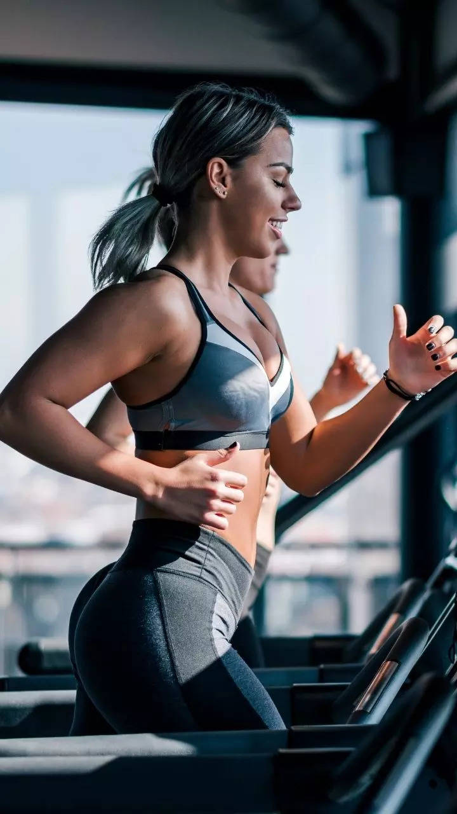
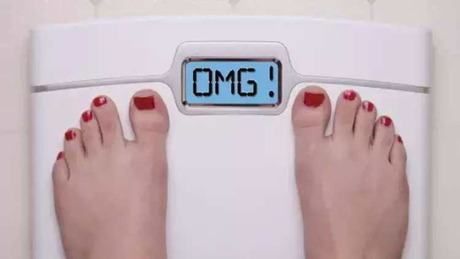

Sporcu Beslenmesi: Beslenme Piramidi

Bu piramit önem ağırlığına göre fitness beslenme bileşenlerini gösteriyor. Bu piramidi ortaya koyan Eric
Helms’e şükranlarımızı sunarak, öncelikle bu parçaların neler olduğunu tanımlayalım.
Kaloriler: Besinlerin enerji birimidir. Hepimizin vücut büyüklüğüne ve aktivite seviyesine göre ihtiyacı
olan bir enerji miktarı vardır. Bunu hesaplamalı ve sporcu diyeti oluştururken kalorilere dikkat ederek
beslenmemiz lazım. Hazırlayacağımız beslenme programının en önemli faktörü olduğu için piramitin
tabanında yer alıyor.
Makrolar: Yediğimiz besinlerin yapı taşlarıdır. Karbonhidrat, protein ve yağları burada inceleyeceğiz.
Bunların oranlarını, amacımıza göre ne kadar almamız gerektiğini öğrenmeli ve buna dikkat
etmeliyiz.
Mikrolar: Yine besinlerle aldığımız fakat makrolar gibi gramla değil, genellikle miligramla veya daha
küçük birimlerle ifade ettiğimiz organik ya da inorganik bileşenlerdir. Vitamin ve mineralleri, besin
kalitesini ve su ihtiyacımızı anlamalı ve buna göre diyetimizi şekillendirmeliyiz.
Besin zamanlaması bölümünde amacımıza göre kaç öğün yememiz gerektiğini, günün saatlerine ve spordan
önce ve sonra nasıl beslenmemiz gerektiğini inceleyeceğiz.
Son olarak supplementler ise gerek eksikleri tamamlama, gerek de performasımızı artırmak adına beslenme
programını destekleyeceğimiz gıdalardır.
Kas Geliştirme ve Yağ Yakma Konusunda Bilmeniz Gerekenler

Vücut geliştirme beslenme programı arıyorsanız iki amacınız olabilir: kas geliştirme veya yağ yakma!
Yağ ve kas farklı dokulardır. İkisini de kolay kazanamaz, kolay da kaybedemeyiz.
Bu faaliyetler süreç ister. Bu süreci merak ediyor musunuz? Etmiyorsanız da etmelisiniz, çünkü bu
önemli!
Çünkü bu bir fitness beslenme programı için anlaşılması gereken en önemli ilk şeydir!
Popüler bir diyeti takip edip kısa sürede yağ yakanlar ya da hafta sonu kaçamakları ile hızlı şekilde
kilo alanlar bunların hızlı olduğunu sanır. Ama maalesef böyle değil…
Tartıdaki oynamalar kas ve yağ dokusunun kazanımı ya da kaybından daha çok su ve glikojen (besinlerin
depo hali) dalgalanmalarından dolayı olur. Kısa sürede tersine dönebilir.
Yani ne kası ne yağı öyle kolay kolay kazanmazsınız da, kaybetmezsiniz de.
Zayıflamak ve yağ kaybetmek için de, kas geliştirmek için de sabırla beslenme programımızı takip
etmeliyiz. İstediğimiz gibi gitmezse düzenlemeler yapmayı bilmeliyiz.
Vücut geliştirme ve beslenme, hızlı sonuçların değil, uzun vadeli bir sürecin bir parçasıdır. Kas
geliştirme veya yağ kaybı, sabır ve düzenli beslenme programının bir sonucudur.
Popüler diyetlerin vaat ettiği hızlı kilo değişimleri genellikle sürdürülebilir değildir; bu süreçte
esneklik, düzenlemeler ve
sabır önemlidir. Unutulmamalıdır ki, vücut kompozisyonunu şekillendirmek zaman alır ve gerçek sonuçlar,
sürekli çaba ve doğru beslenmeyle elde edilir.
Yağ yakımı için beslenme

Günlük ihtiyacınızın yaklaşık %15 kadar eksiğini almalısınız. Bunu hesaplayıcımız sizin için otomatik
hesaplıyor.
Bu, temel olarak amacı yağ yakmak olanlara önerilebilecek bir şemadır. Başlangıç olarak bu değeri
koyduktan sonra fitness beslenme programında nasıl değişiklikler yapmanız gerektiğini de birazdan
okuyacaksınız.
Yağ oranını düşürmek ve kilo vermek istiyor.
Hesapladığımızda Ceren’in BMR değeri 1500,
3 gün egzersiz yaptığını göz önünde bulundurduğumuzda günlük kalori ihtiyacı ise 2330 kalori. Bu miktar teorik olarak vücut kütlesini sabit tutacak bir miktar.
Ceren’in amacı yağ yakmak olduğu için başlangıçta her gün 1900 kaloriyi hedeflemesi gerekiyor.
Kas gelişimi için beslenme
Günlük ihtiyacınızın yaklaşık %10 kadar üzerine çıkmalısınız.
Kas geliştirmek için beslenmenin de bir sürü farklı senaryosu olsa da, “clean bulk“ denilen en mantıklı
seçenek budur. Başlangıç olarak bu değeri koyduktan sonra nasıl düzenlemeler yapacağınızı birazdan
okuyacaksınız.
BMR değeri 1730, 3 gün egzersiz baz alındığında günlük ihtiyacı yaklaşık 2700 kalori ediyor.
Bu miktar kütleyi sabit tutmak için gereken miktar olduğu için; kas geliştirmek adına başlangıç olarak Ahmet’in günde yaklaşık 3000 kalorilik bir diyet uygulaması gerekiyor.